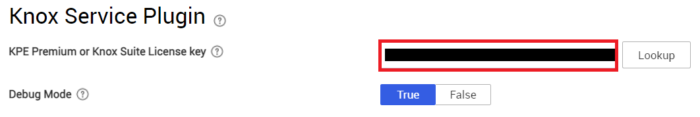
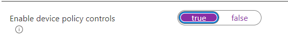
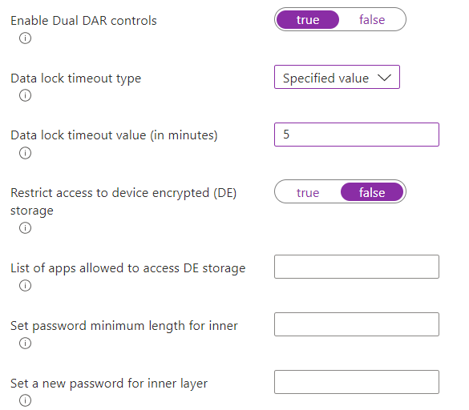
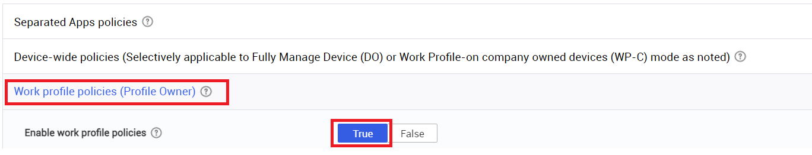
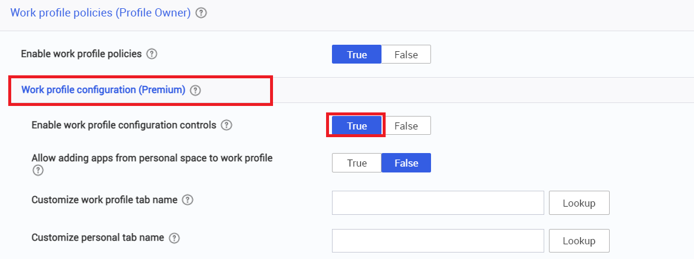
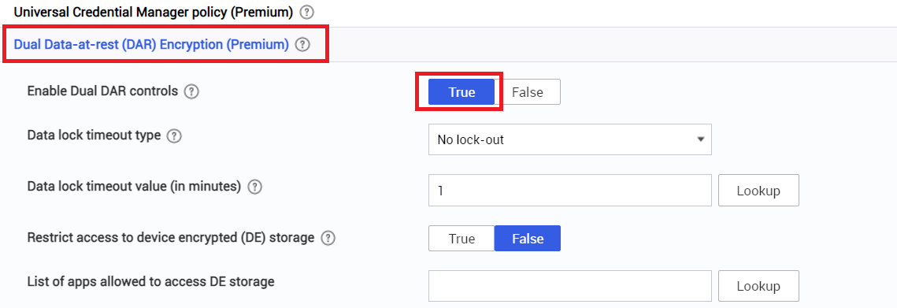
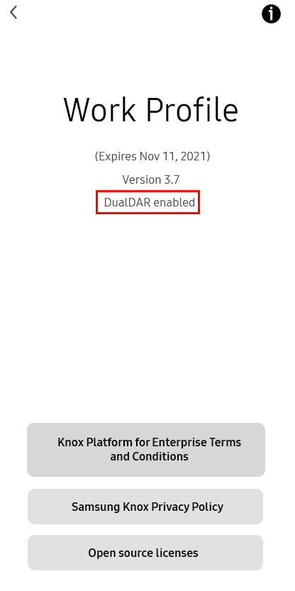

Enabling Dual DAR with Knox Service Plugin
Last updated July 26th, 2023
Prerequisites
- Enable DualDAR in KME or KME Direct profile configuration
- MDM/UEM to deploy KSP
- Knox DualDAR license Key
- Device that has Dual DAR 1.1.0 or higher
Supported devices
| Android version | Samsung Exynos | Qualcomm Snapdragon |
|---|---|---|
| Android 9 | Galaxy S10e (Spring 2019) | Galaxy S10+ (Spring 2019) |
| Android 10 | Galaxy S20+ (Spring 2020) Galaxy S10e (Spring 2020) |
Galaxy S20+ (Spring 2020) Galaxy S10e (Spring 2020) |
| Android 11 | Galaxy S21 Ultra (Spring 2021) Galaxy S20+ (Spring 2021) Galaxy S10e (Spring 2021) Galaxy Tab Active3 (Spring 2021) |
Galaxy S21 Ultra (Spring 2021) Galaxy S20+ (Spring 2021) Galaxy S10+ (Spring 2021) |
| Android 12 | Galaxy S22 (Spring 2022) DO and WP-C PO mode Tab S8 (Spring 2022) DO and WP-C PO mode |
Galaxy S22 (Spring 2022) DO and WP-C PO mode Tab S8 (Spring 2022) DO and WP-C PO mode |
How to enable DualDAR for DO
Note
In order to successfully deploy and activate DualDAR through the Knox Service Plugin, you must enable DualDAR in the Knox Mobile Enrollment or Knox Mobile Enrollment Direct configuration.
-
Through your EMM of choice, go to KSP Configuration.
-
On the KPE configuration page:
-
If your EMM uses profiles, enter the profile name.
-
Enter the KPE Premium key.

-
-
Click on Device-wide policies (Selectively applicable to Fully Manage Device (DO) or Work Profile-on company owned devices (WP-C) mode as noted) (which drops down additional configurations) under Enable device policy controls set to True.

-
Set Enable password policy controls with KSP > Passcode Policy to True.
-
Expand Dual Data-at-Rest (DAR) Encryption, then set the following:
-
Enable Dual DAR Controls — true.
-
Data lock timeout type — Select a data lock type. This feature locks the credential encrypted (CE) storage and flushes the key from memory. Once locked, apps can’t use the CE until the device user provides the credential again.
-
Data lock timeout value (in minutes) — Enter a lockout duration higher than 5.
-
Restrict access to device encrypted (DE) storage — false.
-
List of apps approved to access DE storage — Enter one or more app package names For example, com.android.messages.
-
Set password minimum length for inner layer — Enter a password minimum length for the inner layer password at DualDAR for fully managed devices.
-
Set a new password for inner layer — Enter a new password for the inner layer at DualDAR for fully managed devices. The password must be stronger than the minimum quality. For example, if the minimum quality is numeric, then you must enter an alphanumeric password.

-
How to enable DualDAR for work profiles
Note
Ensure you have enabled DualDAR in the Knox Mobile Enrollment or Knox Mobile Enrollment Direct configuration in order to successfully deploy and activate the DualDAR feature through Knox Service Plugin.
-
Through your MDM/UEM of choice, go to the KSP Configuration.
-
Under the initial KPE Screen.
-
Enter profile name if applicable (some MDM/UEM don’t require this).
-
Enter the KPE Premium key.
-
-
Click on Work Profile Policies (which drops down additional configurations) under Enable Work Profiles set to True.

-
Set Enable password policy controls with KSP > Passcode Policy to True.
-
Set Work Profile Configuration > Enable Work Profile Configuration Controls to True.

-
Click on Dual Data-at-Rest (DAR) Encryption (which drops down additional configurations).
-
Enable Dual DAR Controls set to True.
-
Data lock timeout type set to any option in the drop down.
- Use this control to set a data lock type. This locks the credential encrypted (CE) storage and flushes the key from memory. Once locked, apps can’t use the CE until user provides the credential again.
-
Data lock timeout value (in minutes) set to any value above 1.
- Use this control to specify the data lock timeout value in minutes. To use this feature, you must set the data lock timeout type to specified value.
-
List of apps approved to access DE storage.
- List application’s package name (example com.android.messages).

-
How to verify Dual DAR is enabled on a device
Verification method 1 via KSP application
-
Go to your Work Profile and click on Knox Service Plugin.
-
Click on Configuration on date & time.
-
Configuration results should show Dual Data-at-rest(DAR) Encryption as successful.
Verification Method 2 via Settings and Work Profile
-
Navigate to Settings (gear icon).
-
Scroll down to Work Profile Settings.
-
Scroll to the very bottom to About Work Profile.
-
Under version number it will say DualDAR enabled (if successfully configured).

Is this page helpful?